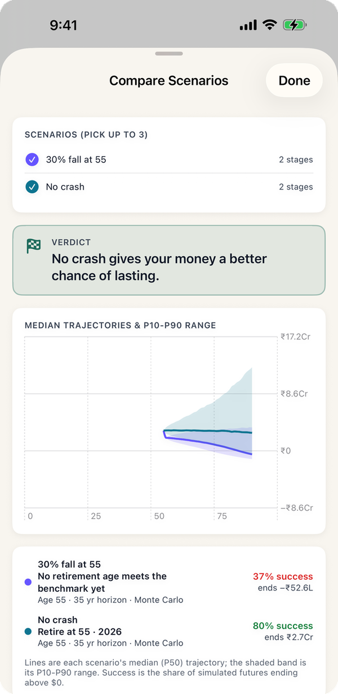
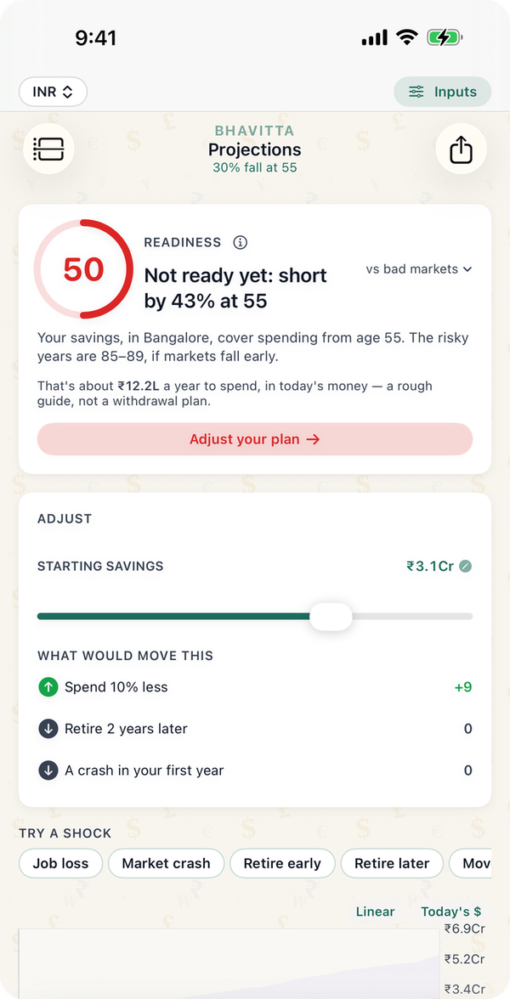

This is sequence-of-returns risk. Two retirees can earn the same average return over 35 years and end up in very different places, because the order matters once you are withdrawing. A fall at 55 hits the largest balance you will ever have, and every year's withdrawal after it comes out of a smaller pot that has less left to recover with. The same fall at 80 hits a pot that has already done most of its work. Every figure below is from the app's engine: 10,000 simulated market paths, in rupees, with the crash replacing one year's return and every other year left to chance.
How much does a crash in the first year hurt?
The chance that ₹3.05 crore lasts to 90 for a Bangalore couple retiring at 55, by the age the fall happens:
| Fall happens at | 30% fall | 40% fall |
|---|---|---|
| No fall (for comparison) | 81% | 81% |
| 55, the first year | 37% | 21% |
| 57 | 41% | 26% |
| 60 | 48% | 33% |
| 65 | 55% | 44% |
| 70 | 61% | 54% |
| 80 | 72% | 70% |
Even a 20% fall in the first year takes the plan from 81% to 54%. A 40% fall at 80 costs about 11 points; the same fall at 55 costs 60.

What gets the plan back to 80%?
- A bigger corpus. With a 30% fall at 55 built in, the corpus needed for 80% rises from ₹3.05 crore to about ₹4.55 crore. That is the price of being sure about the worst first year, and it is why the readiness score in the app can be judged "vs bad markets".
- Spending less after the fall. Cutting living costs by 10% only gets the plan to 49%. Getting back to 80% takes living costs of about 64% of the plan, roughly ₹6.2 lakh a year instead of ₹9.7 lakh, with health insurance unchanged. Flexible spending helps, but one 10% trim is not enough after a fall this size.
- A mix that falls less. A 30% fall is what a mostly-equity portfolio might see in a bad year; the Nifty 50 lost more than half its value in 2008. A debt-heavy portfolio would fall much less. The equity vs debt guide sizes the fall to each mix.

What the numbers assume
- A couple retiring at 55 in Bangalore with no further income, at the app's resident cost of living (₹9.7 lakh a year today, rising 5% a year), with health insurance at ₹40,000 a year rising 10%.
- Returns from the app's Balanced India Monte Carlo preset: 9.5% a year on average, 13% volatility. 10,000 trials per figure.
- The fall replaces that one year's return in every trial: the whole portfolio loses 30% (or 40%, or 20%) that year, and the years after it are random as usual. The engine does not assume a rebound.
- Survival means the balance stays above zero every year to 90. 80% is the bar the app uses for "ready".
Common questions
What is sequence of returns risk?
It is the risk that bad returns arrive early in retirement, while you are withdrawing from your largest balance. Two retirees with the same average return can have very different outcomes depending on the order. For a Bangalore couple at 55 on ₹3.05 crore, a 30% fall in year one cuts the chance of lasting to 90 from 81% to 37%; the same fall at 80 cuts it to 72%.
What if the market crashes the year I retire?
In this example, the plan goes from an 81% chance of lasting to 90 to 37%. Getting back to 80% would take about ₹1.5 crore more at the start, or living on roughly two-thirds of the planned budget. A smaller fall, or a more conservative mix that falls less, does less damage.
How much more corpus do I need to protect against a crash?
For this couple, about ₹4.55 crore instead of ₹3.05 crore keeps an 80% chance even with a 30% fall in the first year. Your own figure depends on your spending, city and mix; the app's market-crash what-if computes it for your plan.
Is a crash later in retirement less dangerous?
Yes. A 30% fall at 70 leaves this plan at 61%, and at 80 at 72%, against 37% at 55. By then fewer years of withdrawals depend on the balance that fell.
Test your own plan
- Set the currency to INR and build your plan on the Start tab.
- On Projections, the Adjust card's "A crash in your first year" row shows how many points a 30% fall at your retirement age would cost.
- For a different size or age, tap Market crash under "Try a shock" and set the age and the drop. Tap Save as new scenario to keep it, then Compare it with the original on Scenarios.
Find your own number
Free on iPhone and Android. No account; your plan never leaves your phone.